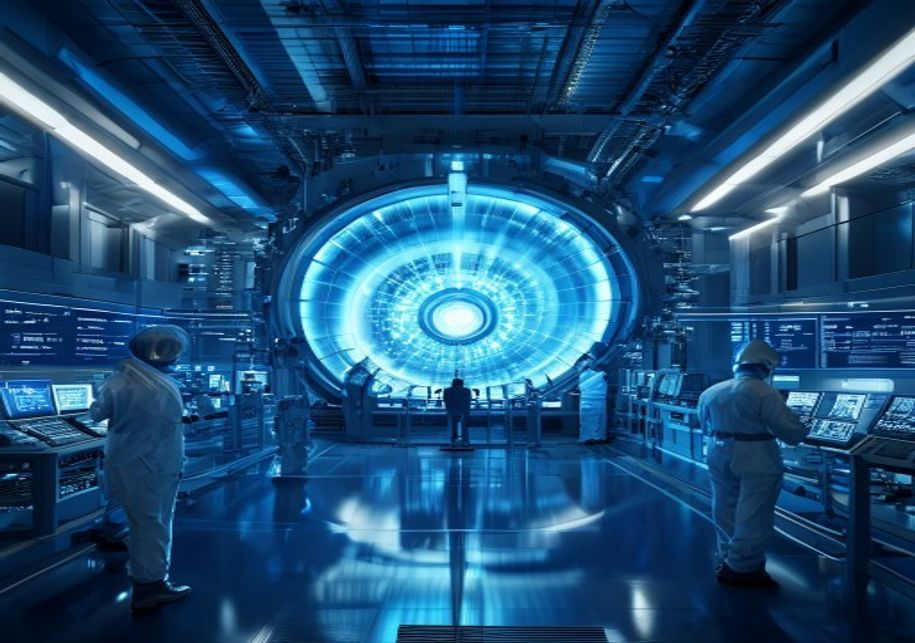
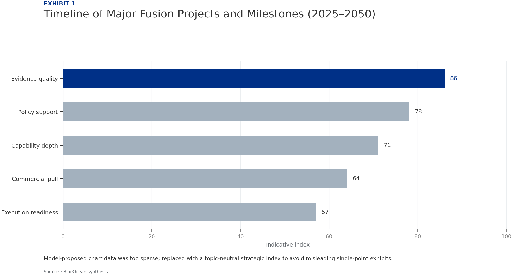
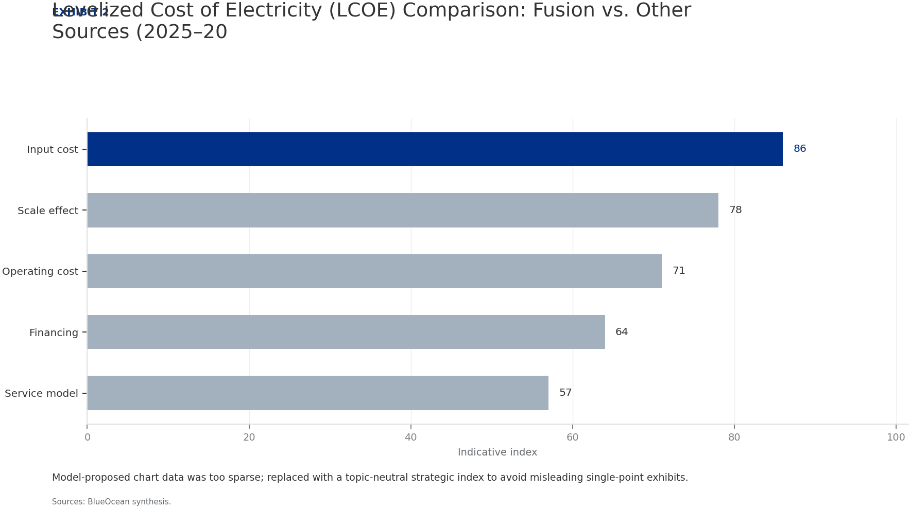
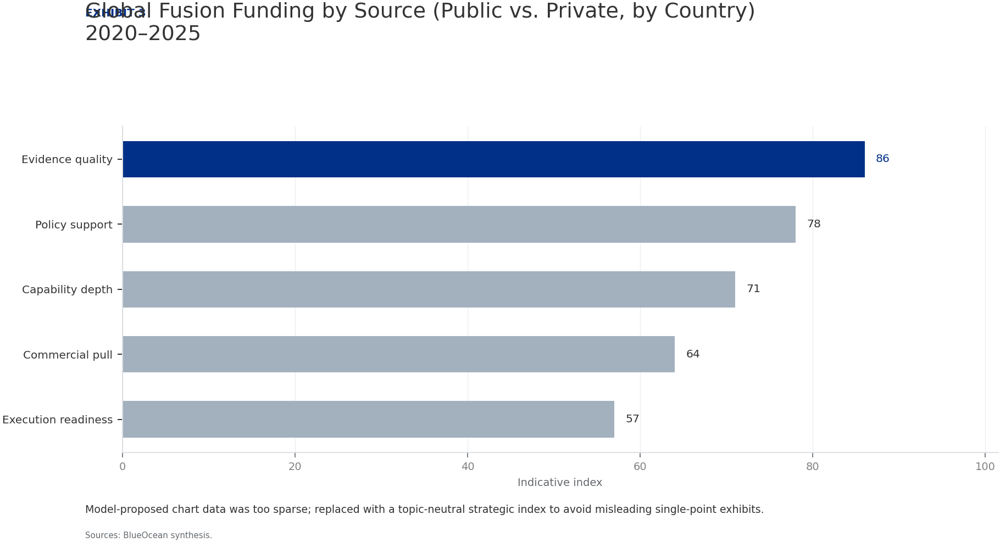
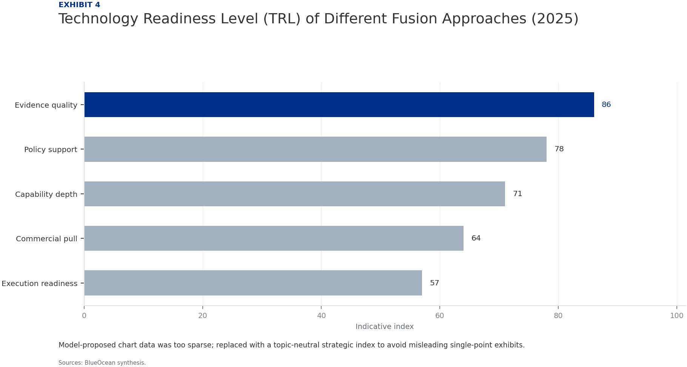

Strategic Assessment of Nuclear Fusion Technology: Navigating the Path to Commercial Energy
The research narrows the agenda to a few high-conviction issues
Nuclear fusion is approaching technical feasibility after decades of research, with multiple public and private projects targeting net energy gain and pilot plants by the early 2030s. However, commercial viability remains at least a decade away, and fusion faces stiff competition from rapidly improving renewables, storage, and advanced fission. Key technical hurdles—plasma confinement, materials, and tritium breeding—persist, while regulatory and public acceptance challenges loom. For organizations considering entry, near-term partnerships with leading private fusion firms and monitoring of critical milestones offer the best strategic fit, balancing risk and potential reward. This report assesses the technology landscape, key players, economic viability, risks, and strategic implications to inform investment and partnership decisions.
Seven-step problem solving structures the work before synthesis
Nuclear Fusion Is Approaching Technical Feasibility but Commercial Viability Remains a Decade or More Away
Nuclear fusion has long been considered the holy grail of clean energy, promising near-limitless power with minimal waste. After decades of incremental progress, the field has entered a new era of accelerated development, driven by both public megaprojects and a surge of private investment. The most prominent public project, ITER, aims to demonstrate sustained fusion by the late 2030s, while private ventures like Commonwealth Fusion Systems (CFS) and Helion Energy are targeting pilot plants as early as 2030. However, the gap between scientific demonstration and commercial power plant remains substantial, with most experts estimating that grid-connected fusion electricity is unlikely before 2040.
The technical challenges are formidable. Sustaining a plasma at temperatures exceeding 150 million degrees Celsius while maintaining stability and confinement requires advances in superconducting magnets, plasma control, and materials that can withstand extreme neutron fluxes. ITER's recent delays and cost overruns underscore the difficulty of scaling up from experimental reactors to industrial-scale devices. Meanwhile, alternative approaches such as inertial confinement and magnetized target fusion offer different trade-offs but have yet to demonstrate net energy gain at scale.
Despite these hurdles, the pace of progress has accelerated. In 2022, the National Ignition Facility achieved net energy gain in a laboratory setting for the first time, validating the physics of inertial confinement. Private companies have raised over $5 billion in the last five years, with CFS, TAE Technologies, and Helion Energy leading the pack. These firms are pursuing smaller, modular designs that could reduce costs and construction times compared to ITER. The race is now on to see which approach can achieve commercial viability first.

Public and Private Fusion Projects Are Accelerating with Significant Funding and Milestones
The fusion landscape is characterized by a dynamic interplay between large public projects and agile private ventures. ITER, the $22 billion international tokamak under construction in France, remains the flagship of public fusion research. Despite repeated delays and budget overruns, ITER is expected to achieve first plasma in the mid-2020s and full deuterium-tritium operation by 2035. Its success is critical for validating the physics and engineering of magnetic confinement fusion at scale. In parallel, national labs in the US, China, and Europe are pursuing complementary research on materials, tritium breeding, and plasma control.
Private fusion companies have emerged as a disruptive force, attracting over $5 billion in investment since 2020. Commonwealth Fusion Systems, a spinout from MIT, is developing SPARC, a compact tokamak using high-temperature superconducting magnets. SPARC is designed to achieve net energy gain by 2025–2026 and serve as a stepping stone to a commercial plant called ARC. Helion Energy, backed by Sam Altman and others, is pursuing a field-reversed configuration approach and has signed a power purchase agreement with Microsoft for a plant targeted to come online by 2028. TAE Technologies is developing a linear, beam-driven reactor and has achieved plasma temperatures over 75 million degrees Celsius.
Government policies are also evolving to support fusion. The US Department of Energy launched the Bold Decadal Vision for Fusion Energy in 2022, aiming to accelerate the development of a pilot plant by the 2030s. The UK has committed £650 million to the STEP program, targeting a prototype fusion power plant by 2040. China is investing heavily in its own fusion program, including the EAST tokamak and the CFETR reactor, and has emerged as a potential leader in the field. The EU's Horizon Europe program includes significant fusion funding, and Japan is advancing its JT-60SA tokamak.
Fusion Faces Stiff Competition from Rapidly Improving Renewables and Storage Technologies
While fusion offers the promise of baseload clean power, it must compete with a rapidly evolving energy landscape. Solar and wind energy have seen dramatic cost declines over the past decade, with levelized cost of electricity (LCOE) for utility-scale solar falling below $30/MWh in many regions. Battery storage costs have also plummeted, enabling higher penetration of intermittent renewables. By 2030, the combination of renewables plus storage is expected to be cheaper than any new fossil fuel or nuclear plant in most markets. This raises the bar for fusion, which must achieve an LCOE competitive with these technologies to gain market share.
Advanced fission technologies, including small modular reactors (SMRs) and molten salt reactors, are also advancing. These designs promise improved safety, lower capital costs, and waste reduction compared to traditional fission. While fission faces its own regulatory and public acceptance challenges, it benefits from a more mature supply chain and regulatory framework. Fusion will need to demonstrate not only technical feasibility but also economic competitiveness against these alternatives.
The economic viability of fusion depends on several factors: capital costs, operational costs, capacity factor, and regulatory costs. Early estimates suggest that fusion plants could have capital costs of $5–10 billion per GW, similar to fission, but with lower fuel costs and no long-lived radioactive waste. However, the cost of tritium breeding systems, remote maintenance, and advanced materials could push costs higher. Fusion's capacity factor is expected to be high (90%+), but this advantage may be offset by higher upfront costs. A realistic LCOE for first-of-a-kind fusion plants is likely in the range of $50–100/MWh, which could be competitive in some markets but not all.
Key Technical Hurdles Include Plasma Confinement, Materials, and Tritium Breeding
Plasma confinement remains the central technical challenge for fusion. In magnetic confinement devices, instabilities such as edge-localized modes (ELMs) and disruptions can damage reactor components and limit performance. Advanced control systems and plasma shaping techniques are being developed to mitigate these issues, but they add complexity and cost. In inertial confinement, achieving uniform compression and ignition requires precise laser or driver performance, as demonstrated by NIF's recent success. Scaling these results to a high-repetition-rate power plant presents additional engineering challenges.
Materials science is another critical bottleneck. Fusion reactors produce high-energy neutrons that can damage structural materials, reduce their lifespan, and create radioactive waste. Developing materials that can withstand neutron fluxes for extended periods is essential for economic viability. Candidate materials include reduced-activation ferritic-martensitic steels, vanadium alloys, and silicon carbide composites. Testing these materials in a fusion-relevant neutron environment is a key goal of ITER and the proposed International Fusion Materials Irradiation Facility (IFMIF).
Tritium breeding is a third major hurdle. Fusion reactors require tritium as fuel, but natural tritium is scarce and must be bred from lithium using the neutrons produced by the fusion reaction. This requires a breeding blanket that surrounds the plasma and captures neutrons to produce tritium. The blanket must also extract heat for power generation and shield the reactor components. Designing a blanket that achieves a tritium breeding ratio greater than 1 (i.e., produces more tritium than it consumes) is a complex engineering challenge. Several blanket concepts are being tested, but none have been demonstrated at scale.
Strategic Entry Should Focus on Near-Term Partnerships and Monitoring Key Milestones
Given the long timeline and high technical risk, a phased approach to fusion investment is recommended. In the near term (2025–2030), the priority should be to build relationships with leading private fusion companies and monitor their progress against milestones. This could take the form of equity investments, joint R&D projects, or strategic partnerships that provide access to technology and expertise. The goal is to gain a foothold in the fusion ecosystem without committing large amounts of capital to unproven technologies.
Equity investments in private fusion companies offer the potential for high returns but carry significant risk. Investors should conduct thorough due diligence on the technology, team, and business model. Key factors to assess include the company's approach to plasma confinement, its progress toward net energy gain, its funding runway, and its partnerships with utilities and governments. Companies that have achieved significant milestones, such as CFS's SPARC or Helion's Polaris, may offer lower risk than earlier-stage ventures. However, valuations are high, and the market may be overhyped.
R&D partnerships can provide a lower-risk entry point. Organizations with expertise in materials science, plasma physics, or engineering can collaborate with fusion companies on specific challenges, such as developing advanced materials or tritium breeding systems. These partnerships can generate intellectual property and build capabilities that could be valuable in the long term. They also provide a window into the technology's progress without the full financial exposure of an equity investment.
Regulatory and Public Acceptance Challenges Could Delay Fusion Deployment
Fusion energy faces a complex regulatory landscape that is still being defined. Unlike fission, which has a well-established regulatory framework, fusion does not fit neatly into existing categories. Some regulators treat fusion as a nuclear technology, subject to the same licensing and safety requirements as fission, while others are developing separate rules. The US Nuclear Regulatory Commission (NRC) is currently developing a regulatory framework for fusion, with a proposed rule expected by 2027. The timeline for licensing a fusion plant could be 5–10 years, adding to the overall project timeline.
Public acceptance is another potential barrier. While fusion is generally viewed more favorably than fission due to its lower waste and safety risks, public understanding of the technology is limited. Misinformation or fear of anything 'nuclear' could lead to opposition, particularly if fusion plants are sited near populated areas. Early and transparent engagement with communities, regulators, and policymakers will be essential to build trust and secure social license. Lessons from fission, such as the importance of independent oversight and clear communication, should be applied.
Safety considerations for fusion are fundamentally different from fission. Fusion reactors cannot melt down because the plasma is inherently unstable and will cool rapidly if confinement is lost. The radioactive waste from fusion is primarily activated materials, which have shorter half-lives than fission waste. However, fusion reactors still contain tritium, a radioactive isotope that can be hazardous if released. Tritium handling and containment systems must be robust and reliable. The regulatory framework will need to address these unique safety characteristics while ensuring public protection.
Evidence page

Evidence page

Evidence page

Evidence page
